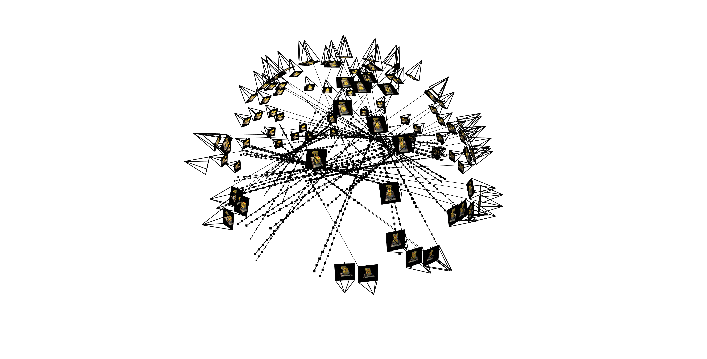

Final Project - NeRFs!
Fit a Neural Field to a 2D Image
We first start by trying to fit a neural field to a simple image. We build a positional
encoding using sines and cosines of the x and y coordinates, and then pass this through
an MLP-based neural network. Generally, this function is of the form:
\[
f: \mathbb{R}^2 \to \mathbb{R}^3
\]
\[
(u, v) \mapsto (r, g, b)
\]
We use 3 hidden layers with dimension 256, $L = 10$ for the positional encoding,
and learning rate of 0.01. Results can be seen below:

Original
We also tried varying the hyperparameters, with hidden_dim = 128 and L = 6, which resulted
in significant degradation in the results, as a result of fewer parameters and expressive power of the network.

Iteration 0
Original
Here are the PSNR plots for the fox and the golden gate image:
Part 2: Fit a Neural Radiance Field from Multi-View Images
Now, we can try fitting a NeRF to the Lego example from the paper. We use the $R$ matrix
to map camera points to the world space. Similarly, we use the $K$ intrinsic matrix to
map pixels to the camera space. Finally, we use both of these functions to map each
pixel to a "ray", which define as an origin and a direction (we choose depth as 1).
We do this by taking the camera locations as $r_o$ for the origin and the direction $r_d$
by mapping pixels to the world space and normalizing the direction by finding the difference
between the world space and the origin.
We then sample rays from images during training and try to map $(u, v)$ to $(r, g, b, \sigma)$.
This output is then rendered as a volume using the approximation for $\hat{C}(r)$. You can see
the training results below:

Camera Ray Visualization

Iteration 4500

NeRF PSNR
Finally, we change the vol_rend function to output the per-point depths to the pixel depth
and then render the image using the depth map. This results in the following gif: